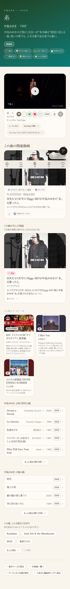
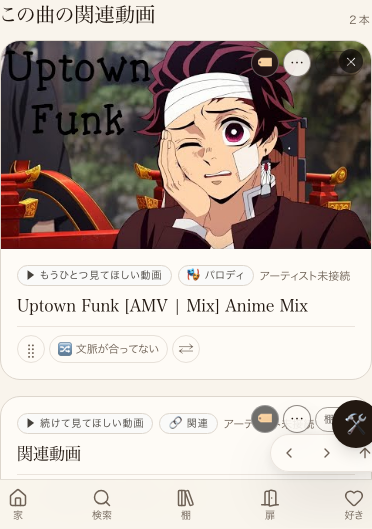
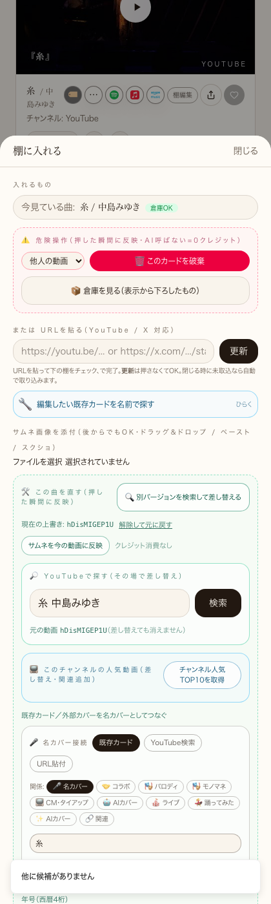

| 確認項目 | 結果 |
|---|---|
| 編集ボタン(外す/文脈が合ってない/ドラッグ/左右)が実在の本番ページに表示される(訪問者には出ない) | yes |
| 『文脈が合ってない』を実際にクリック→本物のログイン→本物のサーバー往復が動作する | yes |
| 上記の実行結果(現時点のデータでは候補0件=no_candidate)を正直に表示できている | yes |
| 『外す』の実クリックによる本番データ削除は今回あえて自動実行していない(本番コンテンツを壊さないため) | yes(未実行) |
| 型チェック(tsc --noEmit)エラー0/ESLint(変更ファイルのみ)エラー0 | yes |